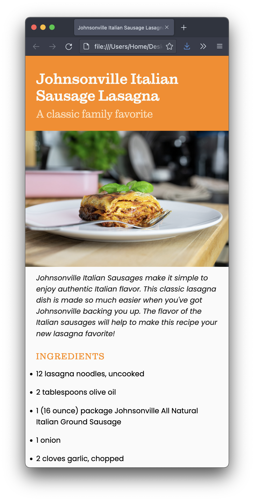
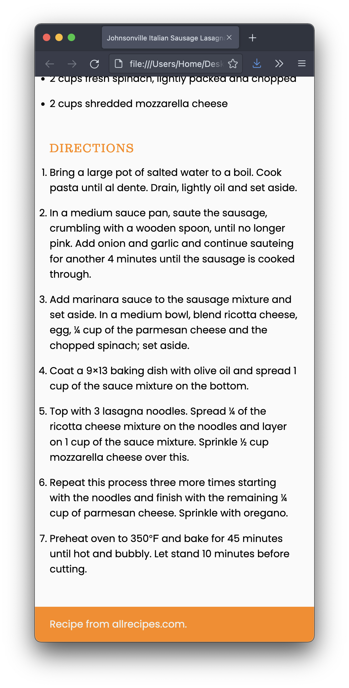

I’m providing the structure for a webpage and your job is to style to as close as possible to the screenshots below:


I also included a placeholder image. You need to replace it with an appropriate image.
For this assignment, the goal is to make it look good on smartphone only. You don’t need to worry about tablets, laptops, and desktops. (We will work on it next week.)
Whatever you do, though, you may not edit the HTML file at all.
Publish your pages on the URL: username.github.io/grc338/css-mobile-first
Download this zip file.
Unzip the file. It contains one HTML file, one image, and one CSS file.
Open the CSS in VS Code (or your text editor of choice).
Replace the image, without changing the HTML file. (Rename the other image.)
Write your CSS to make it look like my screenshot.
Work offline on your CSS file, until you found a solution that you’re happy with, but don’t change the HTML file.
To use the fonts I’m using on my example, you’ll need to add the font-family, font-weight, and font-style values that are listed below:
If you wanted to use Sutro Light Italic on your paragraph (you don’t), you would need:
p {
font-family: Sutro, serif;
font-weight: 300;
font-style: italic;
}
So don’t copy the example above, but use it as a model to apply the each typeface from the list below to where they belong in your CSS. (Yes, there’s some trial and error involved.)
font-family: Sutro, serif;
font-weight: 300;
font-style: italic;
font-family: Sutro, serif;
font-weight: 300;
font-style: normal;
font-family: Sutro, serif;
font-weight: 700;
font-style: normal;
font-family: Sutro, serif;
font-weight: 700;
font-style: italic;
font-family: poppins, sans-serif;
font-weight: 400;
font-style: italic;
font-family: poppins, sans-serif;
font-weight: 400;
font-style: normal;
font-family: poppins, sans-serif;
font-weight: 700;
font-style: italic;
font-family: poppins, sans-serif;
font-weight: 700;
font-style: normal;
You’ll be evaluated on your technical skills using CSS.
Remember, it’s smartphone only. Don’t worry about wider screens.
You don’t need to make the content narrow for mobile. Make the browser window narrow instead.
Do not change the HTML file for any reason! Not one bit!!!
Always make sure to avoid the most common mistakes
Publish your page on the URL username.github.io/grc338/css-mobile-first/ (Always copy and paste the last part of the URL to avoid mistakes.)
(Instructions to setup your GitHub pages can be found here.)
Create a new index.html file and commit. ➤
Upload all three files (index.html, lasagnastyle.css, and lasagna.jpg) to your GitHub repository. ➤
Once you’re done, click on your name to check if it’s working. If you click on your name, and it’s not working, you probably made a mistake. If it works when you get the link from GitHub, but not when you click on your name, you definitely made a mistake.
Open the same link on your phone to check it again.
Once you have clicked on your name and it worked, you want to answer to the questions on Canvas and submit the assignment.
If you clicked on your name and it didn’t work, don’t submit the quiz on Canvas. If you do and I get a 404 error, you won’t have a chance to resubmit it later.
Also, keep in mind that your repository is public and I can see when you have submitted each file. (Including the history of files.)